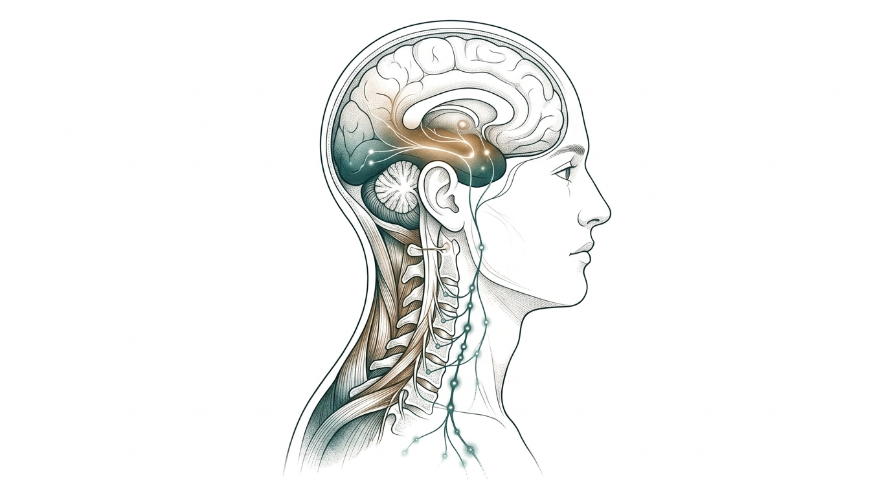

頭鳴り（ずなり）の鍼灸
頭の中で「キーン」「ザー」と音が鳴り続ける状態を、脳の過覚醒（自律神経）と首肩の深層筋から整える施術解説。
院長YouTube解説・関連動画


頭鳴りとは頭の中から音が聞こえること
- •頭鳴りを見続けてきて11年
- •鍼灸臨床数１０万人を超えました。（2024年現在）
この症状でやっかいなのは、MRIやCTなどでは問題が見られず「様子見」されることが多くあります。
病院によって対応は異なり、自律神経失調症や心の病、うつ病などと診断されることもあります。
西洋医学と東洋医学、両方の視点からの知識を知っておいた上で理解することが重要です。
頭鳴り、耳鳴りは脳の過剰興奮から
頭鳴りは、文字通り脳内で響く雑音感・異音感です。
「キー」という金属的な甲高いものから、「シャー」「ザー」という砂の流れるような音まで種類は様々です。
また、1人の時によく発生するという見解があります。
これは、誰かと会話をしている時・生活音のある場面では、症状は察知しにくく、夜眠る前など、置かれた空間が静寂に包まれた時に限って起こることが多いからだと考えられます。
そのため、当院では一概には当てはまらないと見ています。頭鳴りには非常に多くの感じ方があります。
☆頭鳴りの起こる原因には、
- •脳の病気
- •脳の血流障害
- •脳の過剰興奮
- •ストレス
- •睡眠障害
- •自律神経の乱れ
- •うつ病
などが関与しています。
基本的に、頭鳴り・耳鳴りの症状は短時間でおさまります。
しかし、持続的あるいは、おさまっては再発するを繰り返す場合、別の病気が原因で起こっている可能性がありますので、病院へ行くことをお勧め致します。
頭鳴り・耳鳴りの症状にかかりやすいのは、中高年の男女。
- •ジージー
- •爆発音
- •シューシュー
- •ジッジッ
- •ピーピー
銀座そうぜん鍼灸院が対応してきた事例では、大体の方がこのような音を感じています。
このような雑音・異音が突発的に日常生活の中で聞こえてくる症状が続くと、次第に心理的苦痛を感じるようになります。
現代医学における頭鳴り・耳鳴りの特効薬は発明されていません。
頭鳴りは脳からくる耳鳴りの悪化版です。脳の側頭葉にある聴覚野が過剰興奮した場合、脳からくる耳鳴りになります。
聴力や耳の構造には全く問題がなく、ウイルスの感染や交通事故、精神的ストレスなどの色々な要因で発症します。ストレスがかかると目がピクピクしたり過敏性腸症候群が起こったり顎や背中のニキビが発生したり毛嚢炎が起こったりなどの症状が起こるように、脳が過剰に興奮すると色々な症状が出るのです。
症状は人によって違います。脳が興奮するエリアによって肩こりが起こったり、腰痛や頭痛が現れたりというようにエリアによって症状の出方が変わります。
頭鳴りの1番有力な発生機序はグルタミンサイクルの変調です。
脳のシナプスが神経を伝達する際にするグルタミン酸という物質を出して受け取って興奮を伝えていきます。グルタミンを出して受け取るグルタミンサイクルが何らかの影響で止まってしまうと停滞箇所で興奮が持続します。側頭葉の聴覚野で興奮が続いてしまい、それを音として認識して脳からくる耳鳴りが起こるのです。
範囲が広くなっているのか場所によって違うのか把握できませんが、悪化していくと音がどんどん上にずれて行ったり後ろにずれていき頭鳴りになります。
頭鳴りと耳鳴りの違い
頭鳴りと耳鳴りに共通する症状は、各箇所で不快な音が聞こえること。
順番は、耳鳴りが始まった後に頭鳴りを発症するケースが多いです。
耳鳴りは、ライブ会場や花火といった大きな音を比較的長い時間にわたり聞いた後にもよく起こる現象なので、比較的軽視されがちです。
長期間続くようであれば、聴覚や脳に何らかの異常を疑ってください。
こちらも頭鳴り同様、好発するのは中高年が多く、老衰も症状を誘発する原因だといわれています。
また、耳鳴り＝頭鳴りの症状を訴える人も少なくありません。
☆耳鳴りの原因
- •脳神経の圧迫
- •聴力低下
- •肩凝りや首の筋肉の緊張による血行の悪さ
- •脳の興奮
- •セロトニン神経の過剰興奮
このような原因が挙げられますが、確固たる根拠はいまだ明らかになっていません。
頭鳴りと耳鳴りの違いは、不快な音のする場所が違うというだけです。
両方とも非常に近い位置にあるパーツなので、どちらかに問題が起こると、もう片方にも影響を及ぼすことが多くなっています。
特に、多発性脳梗塞や聴神経腫瘍などといった脳や耳の病気または精神病の前触れとして耳鳴りが発生した場合、続けて頭鳴りの症状に追い込まれるケースも少なくありません。
🎥 他のYouTube切り抜き・解説を読む（あと4件）▼
頭鳴りと耳鳴りの対処法
頭鳴り・耳鳴りに悩む人は心の問題を抱えている場合がほとんどです。
また、常に考え事や忙しさに追われ脳が過剰に働きすぎているのも原因の一つといえます。症状を落ち着かせるためためには、まず大前提として休息が重要です。
リラックス効果のある音楽は、不快な音から気を逸らすアプローチがあります。ただし、心の持ちようによって効果が期待できない場合もあります。
大切なのは、気持ちをリラックスさせ、決して原因を突き詰めようとしないことです。神経質になると、更に症状を悪化させてしまいます。
「病は気から」という言葉があるように、頭鳴り・耳鳴り症状の最大の原因は心の疲れと言われております。1日の中で何も考えずにいる時間を5分からでも作ってみましょう。α波などヒーリング効果の高い音楽を流すのも有効な方法です。
改善を行って興奮が落ち着いたり変化すると頭でなっている音が徐々に耳に寄ってきて耳鳴りになって落ち着いていきます。これが頭鳴りの正式な改善の道です。
当院でもこの改善の順番で改善した人がたくさんいます。
頭鳴りの音に変化がある場合は非常に改善しやすい傾向にあります。反対に改善を行っても全く変化がない場合は改善しにくい傾向にあります。音が変わる場合は原因部分の変化があるということになるため、セルフケアがおすすめです。
耳鳴りや頭鳴りでは慣れることもゴールであるという人がいますが、当院でもゴールとしているのは０〜２の耳鳴りや頭鳴りの程度をうろうろすることです。
ただし、老人性難聴のような耳鳴りやワクチンなどの薬害による耳鳴りは爆音が続いて改善しにくいですが、生体反応で起きた耳鳴りは改善を諦めることはありません。
頭鳴りのセルフケア
踵骨という踵の骨に失民というツボがあります。失民にはお灸をして睡眠の質を上げるアプローチをする人が多いですが、当院では失民は脳を沈静化するポイントがあると考えています。
かき氷頭痛というかき氷を食べると頭が痛くなる症状があります。かき氷頭痛の原因は明らかになっていませんが、原因として1番有力な説はかき氷を食べて三叉神経が冷やされて刺激が伝わって頭が痛くなるという説です。
かき氷を食べている時に足を温めながら食べると頭痛は起きません。このことからも脳が興奮する要素を落ち着かせるために重要なことが足裏に隠されていると当院では考えています。
失眠へのアプローチでは骨の出っ張りのところでゴリゴリするところを探して欲しいです。やっていくうちに痛いところや靭帯のように硬いところがあります。そこに体重をかけながら行いましょう。
やり方は踵の縁を思いっきりゴリゴリすることです。ゴルフボールを使います。地面とゴルフボールを挟み、踵の骨の膜に当てるように行うことが大事です。
指だと弱いため、ゴルフボールや足裏マッサージ機で行いましょう。竹踏みのイボイボでぐりぐりしているという人もいます。この方法も非常に良いです。ゴルフボールの方が硬くて完骨の骨に当たるため良いですが、自分がアプローチをしやすい方で良いです。
この方法は踵骨、骨の膜に対してアプローチを行います。強さは骨に当たるくらいで行います。
耳のツボを使ったアプローチは当院でも良く行っています。耳の周りを触るとくぼみが４つあります。セルフケアでは自分の指で押しましょう。
耳の前から縦になぞって凹んでいる場所を押します。へこみを骨に当たるようにぐりぐりしましょう。人差し指でも中指でも良いです。頭蓋骨に響かせるように押します。
耳を折って耳のきわを上部の先端横になぞっていくとあるへこみを押します。へこみにアプローチします。
③頭竅陰
耳の後ろのへこみにあります。押すと響く場所を押しましょう。
耳の後ろにある突起頭蓋骨の突起を押します。耳の縁を触ると細い乳様突起という骨があります。この骨を押します。へこみを押しても良いですが、頭蓋骨を押すイメージで押しましょう。
４つのツボをまとめて同時に押します。同時に押すことが難しい場合は１つずつでも効果を感じることができます。
効果は人によりますが、頭蓋骨を削るように押すことが大事です。わからない人で当院に来院した場合は聞いていただけると施術の際に押しています。
聴覚野は、耳の上２cmくらいのところにあるエリアです。頭蓋骨に対して押していきます。筋肉アプローチではなく頭蓋骨にアプローチすることが大事です。
痛いですが押すと頭鳴りが消えていきます。１０分以内で十分効果があると考えています。痛くなるくらい行うと落ち着いてくるでしょう。
頭蓋骨を削るように押さないと効果がありません。
※セルフケアの注意点
頭鳴りや耳鳴りに悩んでいる人で頭や首を振ると音が鳴る場合はこのセルフケアは合いません。聴覚神経や周辺の神経が異常に興奮しているため、刺激を与えることで音が強くなる可能性があるため注意が必要です。
耳鳴り、頭鳴りの改善の過程
当院に来院される方は、耳鳴り頭鳴りの人が1番多いです。そのような人が1番悩むポイントはどこで鍼灸を終えれば良いのかということです。うるさい状態から良くなってきて安定した状態を壊したくないため、どこで卒業したら良いのか、卒業後はどうなのか、という悩みを漠然と抱えています。
当院に通院されている耳鳴り頭鳴りの方のほぼ半数は1番辛い時を10とした時の辛さでいうと、0と2をうろうろしています。耳鳴りの症状の特徴を理解することで施術から卒業しやすくなります。
脳からくる頭鳴り耳鳴りの改善には、神経の可塑性という脳の素晴らしい能力が重要です。神経の可塑性は脳が新しい経験や刺激を受けることで脳の構造や機能を変化させる能力のことです。これにより脳自身を再構成し機能を回復させることができるのです。鍼の刺激を受けることで脳の可塑性を上げ、脳からくる耳鳴りが落ち着いていくという回復過程をたどります。
当院では、耳鳴り頭鳴りは脳の側頭葉にある聴覚野が異常に働くことで起きると考えています。病院で処方される薬はSSRIやリボトールなどが多いですがこれらも脳の過覚醒、過剰興奮を落ち着かせる薬です。サウンドセラピーは特定の音を使って脳の新しい反応を学習させることで、脳は耳鳴りの音をより脳は耳鳴りの音を無視する方法を学び異常な神経活動を正常化する新しい経路を形成する改善方法です。
鍼は神経フィードバック療法とも言われていて、皮膚に存在するツボや特定の領域を刺激することで脳にポジティブな影響を与えることができ神経回路の再構成を助けてくれる方法です。
耳鳴りや頭鳴りの症状は人によってゴール設定が全然違います。人によって考え方や症状との向き合い方が違うのです。その方の目指すゴールに向かって施術をしますが、ここで理解しないといけないことがあります。
耳鳴りと頭鳴りの改善の経過と安定化についてです。耳鳴りの改善の経過では変動があります。1番辛いのは変動期でうるさい時と楽な時に大きな差があり、この差によって悩んでしまうのです。
鍼をすることでどんどん音が下がっていきますが、下がってきてもうるさい時はうるさいです。楽な時とうるさい時の差が少なくなってくると、多くの場合慣れてきたというリアクションをもらいます。
1番うるさい時を10とすると、うるさい時が2くらいまで下がってきて静かな時が０になるともう卒業で良いかなと思うのですが、そうはいきません。耳鳴りの静かな時を感じてしまうとうるさい時の2が煩わしくなるのです。当院では多くの人がこの2を下げるための施術を行なっています。
頭鳴り耳鳴りは下がってきたら施術の間隔を必ず空けることが大事です。鍼をすると体に変化が起きるため施術の影響を受けた脳神経は少なからず興奮します。脳の再編成に関しては時間がかかるため待つ時間が必要なのです。待つ時間を作ることで安定してきて0と1をうろうろしたり0.5が続くようになります。これが安定化です。
当院での施術間隔は最長2ヶ月に1回で、多くの場合は1ヶ月に1回です。
安定化すると不規則な刺激や体の負荷に対して耳鳴りや頭鳴りとして反応しなくなります。そうなると気にならなくなります。そこが卒業のタイミングです。
施術の期間を空けてほしいというのは、体の悪い箇所や回復を妨げるフックがなくなっている人に、神経の可塑性、再編成を促すためにお願いしています。
中には勘違いする人もいます。2くらいになるともうほとんど改善したと思い、整体に行って改善をしようとするのです。それによって悪化して戻ってくる人も多いです。2まで音が下がることと安定していることは違います。
間隔を空けるべき人は、
・悪いフックが取れて０〜10の幅が狭くなった人
・低気圧や体の負荷、新しい挑戦で音の変動がない人
期間を空ける提案は、決して見捨てたりしているわけではありません。当院では安心して卒業してもらえる施術をしています。改善するためには安定させる必要がありそのためには期間を空けなければいけないのです。
頭鳴りは精神の病気の1つで、脳波を測定し抗うつ剤を飲んでも10年20年改善しない人もいます。実際に改善しないタイプ人もいます。改善しないタイプが悪いわけではありませんが、改善するタイプの人は安心して施術を続けてほしいと思います。
頭鳴りに効果的な漢方は八味地黄丸
八味地黄丸は中国の伝統的な漢方の1つです。宋の時代に作成された医学書である和剤局方に記されています。八味地黄丸は腎陰虚に対する漢方で、山茱萸・地黄・附子・桂皮・山薬・沢瀉・茯苓・牡丹皮の8つの生薬から生成された漢方です。
腎陰虚は体のエネルギーと液体のバランスが崩れる状態を指します。これにより生じる症状は冷え性や発熱、熱感などの症状です。
八味地黄丸には滋陰利水作用があります。東洋医学では体には陽と陰が存在しているとされています。腎陰虚は腎に陰が不足している状態を指します。
八味地黄丸を摂取すると体に陰を取り込むことができます。陰を取り込むと余分な水分を出すことができるため、むくみの改善や陽の鎮静化ができるのです。
中国の伝統医学では腎は単なる尿の生成や排出に関わるだけではなく、生命活動や成長発育といった根本的な力の源とされています。専門用語では「先天の精」と言い、いつも元気な人は先天の精がみなぎっていると解釈します。
腎陰虚は腎の陰が低下している状態です。腎の陰が進むと、顔や手足の火照りや夜間の多汗、夜中の喉の渇きを感じる、腰や膝の痛み、頭痛や聴力低下、不眠や特に足裏と胸の熱感、夜間の頻尿というような症状が多発します。
主な原因は長期的なストレスや過労、過度な性的行動、慢性的な病気、加齢、陰の消耗です。
東洋医学には「腎は精を蔵し、精は髄を生み、髄海を潤す」という腎の格言があります。髄海は脳のことです。
頭鳴りという症状は脳の過剰興奮で発生します。脳の異常興奮と東洋医学の腎陰虚が関係しているのです。そしてその腎陰虚を補う八味地黄丸が役立つ可能性があります。
脳の興奮を落ち着かせるためには東洋医学的解釈で髄海を潤す必要があるのです。そのためには八味地黄丸がお勧めです。
院長も耳鳴りを発症？！
当院の院長も1ヶ月前に頭鳴りを発症しました。右側の頭鳴りが起き、右上でサイレンが鳴るような頭鳴りでした。
その時、不安な気持ちでいっぱいでした。元々不安症の人は頭鳴りを発症しやすく、相乗効果で辛くなったりうるさすぎて改善するのか不安にさせられていたりすると思っていました。
頭鳴りの症状は脳の興奮で、脳が興奮することによって音を作り出します。しかし、現在は脳の興奮が不安症の発症にもつながると考えています。脳の反応で、音が辛いというより不安の気持ちが非常に強くなるのです。
脳が興奮することによって皮膚感覚まで敏感になります。右上に頭鳴りがなっている時には左右で触ると右側だけ敏感に感じました。
敏感さがセルフケアによって耳鳴りになり、敏感さが耳に集まってきて耳が燃えるように感じました。具体的にはずっと押されているような感覚で、自閉感を感じます。
耳鳴りも感じているが耳に圧迫感も感じるのです。自閉感と耳鳴りもセルフケアによって音が途切れ始めたり圧迫感を和らげたりすることができます。
ただし、セルフケアも合う人と合わない人がいます。合わない人が行うと高確率で悪化するため注意が必要です。
最近起こった印象的な出来事で、スピーカーが止まって院内が静かになった時に耳鳴りがすると思ったが全く起こらず、その後、家でスマホでYouTubeを見ていると耳鳴りが鳴り始めたという出来事があります。
耳鳴りは無響性耳鳴りを強く認識してしまうため、静かな場所に行くと自分の耳鳴りの感度が上がっていくことで耳鳴りと認識します。そのため脳の感度の問題であると思っていましたが、静かなところで聞こえず、家にいると聞こえるとなると理解が難しいと感じました。
それから、布団に寝ていると耳鳴りを鳴るように仕向けられているというように、耳鳴りは脳が記憶として特定の場所にいると音を認識するように判断するというように記憶に刷り込まれている可能性があるのではないかと考えています。側頭葉と扁桃体と海馬で連動している場所がありますが、海馬と側頭葉が直結している可能性があるのです。
少しでも頭鳴りが改善する方法は？
Q.キーンとなる頭鳴りに６年悩まされています。いろんな病院や鍼灸にも行きましたが良くならず仕事もできず実家で過ごしています。今は漢方を飲んでいますが、少しでも改善するための情報を教えてほしいです。
A.当院では頭鳴りに効く漢方はないと考えています。病気はこうすることでこういう症状が出るということがある程度決まっていますが、漢方は狙っている概念が違います。漢方を処方されたということは体質を変えて行こうという狙い方だと思いますが、当院では頭鳴りを体質から改善したことがないためなんとも言えないというのが本音です。
自分でできる頭鳴り対策はとにかく寝ることです。睡眠導入剤や安定剤、抗うつ剤など寝るためには何を使っても良いので、とにかく寝てほしいです。頭鳴りは体の構造が改善しないと改善していきません。
先日、ゲップとオナラが止まらないという人がいらっしゃいました。病院では原因が自律神経からきていると言われたと言いますが、自律神経の薬を処方されていませんでした。先生の本音で判断と本音が少し違うこともあるのです。自律神経失調症という判断でも、漢方を渡したり何もせずに休むようにいうこともあります。その方は脳の過覚醒からくる腸の蠕動運動の過剰活動だったためそのアプローチを行いました。
同じように頭鳴りも色々な原因から起きるのです。そのため、原因を潰していかないといけません。ただし、原因の捉え方は担当する先生によって違うためそこが難しいのです。
鍼灸は一人一流派と言われるくらいやり方と考え方、鍼の仕方が違います。そのためどこの鍼灸院が良いというお勧めはできませんがとにか薬を使ってでも寝てほしいです。
ただし、頭鳴りが起こる体になっている場合は改善が難しいため、体の構造から改善に取り組むことをお勧めします。
ラスベガスから来院のWさんのケース
《頭鳴りを感じた時期》
頭鳴りは2024年1月に発症。セルフケアをしたがなかなか効果がなく、アドバイスしたサプリも効果がなかったため、日本に来て来院することを決意。3月に来院。
《頭鳴りが酷くなるきっかけ》
なっている音の度合いは１０を最大にすると７くらい。体に悪いところが３つあった。
《銀座そうぜん鍼灸院の来院経緯》
YouTubeをみて来院
頭鳴りのタイプが非常に改善しやすいタイプであることと体に悪いところが３つあることがわかったため、体を改善しながら頭鳴りの改善を行えば、効果は出ると判断。
〈改善しやすい頭鳴りのタイプ〉
・自然発症的に起きたこと
・場所が上や後ろにあること
・発症時より症状が徐々に楽になっていること
・症状自体があまり移動しないこと
頭鳴りには色々なタイプがあります。
・音が点在するタイプ
頭痛が起きた時に頭鳴りがするタイプで、頭痛連動型と呼ばれています。
・薬剤と手術
1番危惧しているタイプです。当院でも耳の中に注射を打ってから頭鳴りが発症したという人がいます。細くないステロイド注射や鼓膜内に対する外科的手術によって頭鳴りが発症する人がおり、この場合は非常に改善しにくいです。
ただし、鼓膜内で起きたことか生理的に起きたことかの判断はできません。たまたま改善をおこなっている最中起こるということもあるため頭鳴りの改善を行ってみないと判断ができません。
Wさんは改善しにくい頭鳴りの特徴が全然当てはまらなかったため改善できると判断しました。
体が正常にならないと睡眠の質が良くならず頭鳴りが改善しにくくなるという特徴があります。Wさんは体に悪いところが３つあったため、鍼灸での改善としては伸び代を感じました。
３〜4回の施術で体が完成し、徐々に頭鳴りが下がり、７からスタートした状態が音の感じ方は５くらいになりました。この時点で、この調子で頭鳴りが落ち着くと判断しました。
またWさんには頭にイボがありました。ウイルス性のイボで、H P Vや乳頭腫ウイルスとも呼ばれ皮膚にウイルスがくっつくことで増殖してできるイボです。イボがぐりぐり刺激されると血流が良くなって血流から影響をもらって大きくなります。
Wさんはイボが改善することで回復が早くなると想定しました。頭鳴りとイボはあまり関係ないと思うかもしれませんが、頭鳴りの症状自体が脳過敏症候群から発生している２次症状であり、痛みや痒み、刺激、環境要因など脳自体が興奮する要素は全部は取り除かなければ頭鳴りは改善しません。
頭の痒みをなくしイボを除去するために、イボが火傷するくらいお灸を行いました。この方法は、ウイルスが焼かれて無くなっていくため、最終的に瘡蓋になって取れて正常な皮膚に戻ります。Wさんにも了解して理解してもらいお灸を行い、最終的には元の皮膚が見えてウイルス性のイボが完全に取れた段階で耳鳴りは0.５になりました。
ここまで回復すれば、0.５に感じる耳鳴りが酷くなって１〜２くらいまで上がることがあっても、必ず0.５に落ち着きます。上がったり下がったりはあるがどんどん落ち着いてくるのです。
最終的に0.５をうろうろする人もいれば急に０が見えて０〜１をうろうろする人もいます。極端な方法での改善は行わずに、睡眠の質を取ることを意識すれば頭鳴りに苦しまなくなります。
理想は鍼灸や院長のことを忘れるくらい頭鳴りが落ち着いてくれれば本望です。
頭鳴りに効果的なサプリ
アイハーブというサプリメントとのサイトで買ったサプリでオメガ３プレミアムフィッシュオイルというサプリメントがあります。
当院には頭鳴り耳鳴りに悩んでいる方が多いです。その方々には手があったかくて足が冷たいサインがあるという共通点があります。このサインは施術を受け終わった後わかりやすくなるため何もしていない状態だとわかりにくいですが、頭鳴りや耳鳴りで悩んでいる人の共通点としてわかっているため、今の施術に生かしています。
頭鳴りや耳鳴りの症状はどんどん変わっていきます。南関東から片道2時間かけて来てくださる方もいます。この方は劇的な効果があり、1回の施術で頭鳴りが耳鳴りに変化しました。ここまで劇的な変化は当院で歴代No.1の変化です。
この方も手が暖かくて足が異常に冷たいというサインがあり、そのサインを消すための施術を行いました。4回施術を行い、そのサインは今なくなり、耳鳴りもなくなってきました。
頭鳴りや耳鳴りで悩んでいる人はとにかく寝てほしいです。合わせてぜひDHA、EPAを飲んでほしいです。これを飲むことでサインがなくなった方もいます。大きくて非常に飲みにくいですが、耳鳴りや頭鳴りの改善の力になってくれるはずです。
脳過敏からくる聴覚過敏に悩むTさんのケース
《頭鳴りを感じた時期》
今年の5月から脳過敏と頭鳴りに悩んでいる。抗不安薬を処方されたがあまり効かない。頭鳴りよりも聴覚過敏の方が強く日常生活に支障をきたしている。
《今まで行った施術》
鍼灸4回。接骨院も1年通ったが良くならなかった。元々頭痛や肩こりの改善のために接骨院に行っていたが、頭痛と肩こりもあまり改善されず痛み止めを飲み続けている。脳派が混戦していて少し異常があり、TMSを勧められた。前担当していた鍼灸師は気の流れを見る人で、色々なところに負担がかかっていて腎臓や肝臓にも負担がかかっているため体全体を改善しないと脳も改善しないと言われた。
《どのような音が鳴っているか》
最初は耳で鳴っていると思っていたが、最近は頭全体で砂をシャーっとされているように鳴っている。静かな寝る前や朝起きた時に鳴る。耳鳴りとは違う感覚で、耳鳴りの時は耳の閉塞感があったが今は全体でなっている感覚。
《マックスの辛さを10だとすると今はどのくらい辛いか》
日による疲れているときは8です。今日は調子が良くて4くらい。
この症状は担当する先生によって解釈が全く違います。何を信じてこのケースを何年見てきたかで全く説明が違うのです。みんな誠意を持って行っているということは同じですがこの症状は本人にも理解されないくらい難しいです。
当院は鍼と西洋医学を信じて解釈をしており、脳からくる耳鳴りに該当すると考えます。興奮しすぎて聴力の感受性まで異常に上がっているのです。
脳が興奮する要素はたくさんあります。人間関係やストレスのような外的要因もあれば、内臓やホルモン、目や脊椎など内的要因もあります。当院では、たくさん体の要素と身体中に張り巡らされている神経の異常性が脳に伝わって、脳が異常性をどうにかしないと思いパニックを起こしているのが脳過敏の本質であると解釈しています。
Tさんは首と腰がそもそも正常ではありません。人の構造は非常に簡単で、上を向いても痛くない腰を反っても痛くないのが普通です。脳過敏の症状を持っている人はみんな同じ症状を持っています。問題は首と腰が悪いということを本人がわかっていないことです。
一生懸命揉んだりストレッチすると体が守るためにどんどんそれが強く硬くなっていきます。それがこの症状が良くならない現実なのです。この症状は首と腰のストレッチ、マッサージは絶対厳禁です。カフェインも激辛もダメです。とにかく刺激物は入れず、首と腰は触らせないことが大事です。当院は「揉まない、揉ませない、ストレッチしない」が原則です。良くなったらマッサージをたくさんしても良いですがこの現状の時は触らせないでほしいと思います。
Tさんの頭に響く耳鳴りを楽にさせることができれば聴覚過敏も改善します。併せて頭鳴りの感受性をとっていくことを目的に施術を行います。
Tさんのように一生懸命体を気を遣っていても腰を反ったり上を向いたりする症状は残ってしまうことがあります。このような症状の方には極端に強い鍼やズドンとくる鍼は禁止です。
この症状の特徴的なところは首と腰が改善しない限りはずっと同じ症状で悩んでしまうことです。色々なことをやったり何度鍼を受けたりしてもサインがなくならない限りは改善しきらないことが現実です。首と腰のサインが残っている人は、耳鳴りも聴覚過敏も楽になってもほぼ半年後に下の症状に戻ります。改善したのではなく症状が引いているだけなのです。
悪いところを無理やり取ろうとすると拒絶反応を起こして音が強くなったり敏感さが増して手を付けられなくなることもよくあります。鍼の現場ではよく見られることであるため、当院ではその場より1週間後に安定するように仕向けています。これが1番脳過敏や耳鳴りの改善の近道だと思っています。
強く揉んでいたら一生懸命体は守ろうとします。当院での施術を続ける場合はそこを理解してほしいです。腰は良くなったのでもう少しで安定すると思います。
Tさんは体がボロボロでそこからくる脳過敏という解釈で施術を行いました。このタイプは改善しやすいタイプのため落ち込む必要はありません。Tさんの症状は接骨院のマッサージで悪化しており、今通っている鍼灸院でも改善していません。当院でそこが改善すれば脳過敏も楽になっていくと見込んでいます。
この症状は悪いところを改善しようとして強い刺激を与えると悪化してしまいます。Tさんの場合は耳鳴りから頭鳴り、頭鳴りから聴覚過敏に悪化しています。この時に強い刺激を与えるとより強くなってしまうのです。
当院では、悪いところを削っていきサインがなくなると、聴覚過敏も頭鳴りも耳鳴りも引いていくという考えです。そして以前のような生活に戻っていくと見込んでいます。このタイプは当院では多いタイプです。経験上良くなるため心配ありません。
Q.多くの人は何回くらい通って改善していますか？
A.当院では首が改善すればあとは勝手に改善すると考えています。余計なことをしないことも大事です。多くの場合首は３〜6回で改善します。耳鳴りや頭鳴りが落ち着くかどうかは耳鳴り頭鳴りの性質にもよります。
Q.耳鼻科では何もできないと言われましたが改善しますか？
A.聴覚過敏の症状は病院の先生は苦手な症状です。先生が間違っているわけではなく、脳過敏というのは病気ではないため病院で判断される病名ではありません。抗てんかん薬を飲んでいることは間違いではないですが、脳が興奮していることが悪いのではなく脳を興奮させている要素が悪いです。
Q.枕はどういう枕が良いですか？
A.何でも大丈夫です。首が悪い人が枕が合わないと言っているだけで首が良い人には枕は関係ありません。枕を変えて熟睡できない、寝違える、というのは首が悪いからです。枕を変えたことで改善する人もいるかもしれませんが、当院で改善した人は見たことがありません。とにかく元の体の状態に戻してほしいと思います。
昔1人だけTMSを受けて頭鳴りになった人がいます。そのケースはイレギュラーで、うつ病があってTMSを受けて頭鳴りになりました。それで病院に訴えてうつ病の時にやっていたアプローチと逆のアプローチを無償で行っています。
それでも改善せず当院に来院されましたが当院では改善することができませんでした。TMSで脳の細胞が変わったと思っており、時間差で改善するとは思いますが、体の反応ではないため変えられませんでした。そういうケースもあります。
G A B Aの効果
GABAはガンマアミノ酪酸のことで、主に中枢神経で働く抑制系の神経伝達物質です。自然界に多く分布して食品やサプリメントとして摂取できます。
効果は、リラックス効果、睡眠の質の向上、筋肉の緊張緩和で、脳過敏症候群の人にオススメのサプリメントです。
デメリットに吸収率の問題があります。GABAのサプリメントの吸収率には個人差があり、摂取したGABAが血液脳関門を通過して効果を発揮するかどうかは議論が分かれています。血液脳関門は脳のフィルターのような役割をしており、体の内部からウイルスや摂取したサプリメントを分けています。GABAの分子が大きいため、血液脳関門に引っかかって脳に行かないようにしてしまうのです。
また、妊娠中や授乳中向精神薬や抗不安薬など特定の薬物を服薬中の人は医師と相談してからサプリメントを摂取することが大事です。
GABAは、神経細胞の興奮を抑制しリラックス効果やストレスの緩和、睡眠の質の向上に寄与しています。これは、細胞内に存在するGABA受容体と結合し細胞内の塩化イオンチャンネルを開くことで興奮シグナル伝達を抑制するためです。これにより神経細胞の情報伝達が抑制されるためにリラックス効果が起き、リラックスする方向に仕向けてくれるのです。
GABAは小腸のGABA受容体に効きます。小腸にもGABA受容体は存在し、GABAのサプリメントを摂取することで小腸のGABA受容体と結合し腸内環境が調整されます。脳と腸の密接に関係する脳腸相関という役割があります。脳腸相関はストレスや不安が消化器系の働きに影響を与えることを示しており、小腸の受容体に作用することでストレスによる消化器系の不調が緩和される可能性があります。小腸に効かせることにより脳に効かせることができるのが脳腸相関なのです。
過剰摂取による副作用が心配なため適切な摂取量を守って使用してください。日本人の適切な摂取量は１００〜３００mgです。

なぜ「異常なし」でも頭の中で鳴り続けるのか
MRIやCT、聴力検査で「異常なし・様子見」と言われても、頭の中央や頭頂部で「キーン」「シャー」「ジー」と鳴り止まないのが頭鳴りのつらいところです。銀座そうぜん鍼灸院の臨床解説では、耳そのものの障害よりも、長期間のストレスや睡眠不足、首・肩の深層筋の強い緊張によって交感神経が過覚醒状態（脳が休めない状態）になり、聴覚野が過剰に反応し続けるメカニズムに注目しています。
頭鳴りと一般的な耳鳴りの違い
📌 詳細データ・ツボ一覧表を開く▼
| 比較項目 | 頭鳴り（ずなり） | 一般的な耳鳴り |
|---|---|---|
| 音を感じる場所 | 頭の中心・頭頂部・後頭部など頭の中全体 | 片耳または両耳の奥 |
| 検査での所見 | MRI・CT・聴力検査で「異常なし」が多い | 難聴・中耳炎・メニエール病などを伴う場合あり |
| 背景メカニズム | 脳の過覚醒（交感神経優位）・首深層筋の緊張・睡眠負債 | 内耳の有毛細胞障害・聴神経・中耳疾患など |
| 改善の経過目安 | 頭鳴り → 耳鳴りへ変化 → 音量の波を経て安定化 | 原因疾患の治療・血流改善とともに軽減 |
改善は「頭鳴り → 耳鳴り → 安定化」の階段をたどる
臨床上、頭鳴りはある日突然ゼロになるよりも、「頭全体で響いていた音が耳の周囲に降りてくる（耳鳴り化）」→「音質や音量が日によって変動する」→「気にならない時間が増えて安定する」という段階を踏みやすいのが特徴です。改善が見え始めたら、あえて施術間隔を空けながら脳の神経可塑性（新しい静かな状態の定着）を促す設計が重要になります（銀座そうぜん鍼灸院 公式解説）。
なぜ鍼灸で改善へ向かうのか？（作用機序の図解）
頭鳴り（ずなり）に対する鍼灸は、脳の過覚醒鎮静と深層筋・自律神経の連動メカニズムを通じて、お体本来の回復力を引き出します。

首肩や手足の経穴に痛みの少ない微細刺激を入れ、末梢の感覚受容器へ信号を送ります。
刺激信号が脊髄・脳幹へ伝わり、過剰に高ぶった交感神経の興奮ブレーキを作動させます。
視床下部や大脳皮質の過敏性を穏やかに鎮め、深層筋の緊張と局所血流の悪循環を断ちます。
体の土台が整った段階で施術間隔を空け、症状が出にくい静かな状態の定着を促します。
頭鳴りに用いられる代表的な8つのツボとセルフケア
頭鳴りの鍼灸では、耳周囲の血流と三叉・迷走神経系を整えるツボ、後頭部の深層筋緊張を解くツボ、そして脳の興奮を鎮める遠隔ツボ（手首・踵）を組み合わせて使います。

📌 詳細データ・ツボ一覧表を開く▼
| ツボ名（経穴） | 位置の目安 | 主な狙い・役割 | セルフケアのコツ |
|---|---|---|---|
| 聴宮（ちょうきゅう） | 耳珠（耳の穴の前）のすぐ前、口を開けるとくぼむ所 | 耳周囲の微小循環改善・聴覚関連の過緊張緩和 | 指の腹で5秒ほど優しく添える程度 |
| 角孫（かくそん） | 耳を前に折ったとき、耳の上端が当たる髪の生え際 | 側頭部の緊張緩和・自律神経バランス調整 | 強く揉まず、温めるか軽く押さえる |
| 頭竅陰（あたまきょういん） | 耳の後ろにある硬い骨（乳様突起）のやや上方のくぼみ | 側頭部〜聴覚野関連の興奮鎮静（rs-fMRI研究でも使用） | 刺激に敏感な場合は無理に押さない |
| 完骨（かんこつ） | 耳の後ろの骨（乳様突起）の下端、すぐ後ろのくぼみ | 胸鎖乳突筋・頭板状筋の緊張緩和、睡眠の質向上 | 蒸しタオルで温めると効果的 |
| 百会（ひゃくえ） | 左右の耳の上端を結んだ線と、鼻筋の延長線が交わる頭頂部 | 脳の過覚醒の鎮静・自律神経の切り替え | 頭を振って響く時は押さず遠隔ツボ優先 |
| 天柱（てんちゅう） | 後頭部の髪の生え際、首の太い筋（僧帽筋）のすぐ外側 | 首・後頭下筋群の深部緊張を緩める | 強い指圧や首回しは厳禁、温熱ケア推奨 |
| 神門（しんもん） | 手首の内側のしわ上、小指側のくぼみ | 交感神経の興奮・不安感・不眠の鎮静 | 就寝前にゆっくり呼吸しながら軽く押す |
| 失眠（しつみん） | 足裏のかかと（踵）の中央の少しくぼんだ所 | 頭部に昇った興奮を足元へ降ろす・入眠サポート | 頭や首の刺激で響く人に最優先でおすすめ |
査読論文が示す「鍼灸×頭鳴り・自覚的耳鳴り」の科学的エビデンス
頭鳴りは国際医学論文では「自覚的耳鳴り（Subjective Tinnitus）」や「体性感覚性耳鳴り（Somatic Tinnitus）」の枠組みで研究されています。近年、脳機能MRI（rs-fMRI）や二重盲検ランダム化比較試験（RCT）によって、鍼灸が聴覚野と感情・自律神経ネットワーク（島皮質・前帯状皮質など）の過剰な結合を鎮める可能性が報告されています。
2026年二重盲検RCTにおけるTHI（耳鳴り障害度スコア）改善量の比較
n=90（電気鍼群60名 vs シャム鍼群30名、7週間・計20回施術）。数値が大きいほど症状による生活支障度が大きく改善（PubMed PMID: 42191050）。
📚 査読論文データ・出典表を開く▼
| 年・研究デザイン | 対象・規模 | 主な結果と臨床的意義 | 出典 |
|---|---|---|---|
| 2026年 二重盲検RCT＋rs-fMRI | 自覚的耳鳴り90名（電気鍼60 vs シャム30） | THIスコアが電気鍼群で-30.38（対照-21.76、P<0.001）、3か月後も-29.13と持続改善。脳機能結合の変化も確認。 | PubMed 42191050 |
| 2026年 メタ解析 | 不安を伴う耳鳴り12研究（計908名） | 耳鳴り重症度（THI・TEQ）に加え、不安指標（BAI・HAMA・SAS）も有意に改善。自律神経・情動面への効果を示唆。 | PubMed 42839938 |
| 2025年 頭鍼メタ解析 | 20件のRCT（計1,430名） | 頭鍼群で有効率RR=1.25（95% CI 1.16–1.35、p<0.00001）。ただし研究間のバイアス・異質性に留意が必要。 | PubMed 39828220 |
| 2024年 脳機能MRI研究 | 自覚的耳鳴り34名 vs 健常34名 | 聴宮・頭竅陰・百会などへの10回施術でTHI有意改善（p<0.01、有効率88.24%）。島皮質ネットワークの正常化を報告。 | PubMed 38585348 |
| 2020年 系統的レビュー | 8件のRCT（計504名） | VASは有意差なし（p=0.06）だが、生活支障度（THI MD -10.11、p<0.001）とTSI（-8.36）は改善。質の高い追加検証が課題。 | PubMed 32772848 |
| 2019年 症例報告（頸部筋） | 71歳女性（2年来の体性感覚性耳鳴り） | 頸部トリガーポイント鍼治療3回でNRS 7の耳鳴りが消失し、その後5年間再発なし。首筋緊張と音の強い連動を示す事例。 | PubMed 31369860 |
| 日本国内 臨床報告 | 耳鳴り患者103名（全日本鍼灸学会雑誌） | 著効・有効24.2%、やや有効26.2%、無効49.5%。難治性症状ゆえ個人差があり、過度な期待を避けた現実的評価が重要。 | J-STAGE 32巻4号 |
セルフケアの注意点と、病院受診を最優先すべきサイン
避けるべき習慣とセルフケアの境界線
- 首や腰への強いマッサージ・過度なストレッチは厳禁：深層筋の防御収縮を招き、音の悪化要因になりやすいとされています（銀座そうぜん鍼灸院 公式解説）。
- カフェイン・激辛・就寝前のスマホを控える：交感神経の再興奮を防ぎ、睡眠中の脳回復を妨げないようにします。
- 頭や首を振ると響く場合：頭部のツボ押しは避け、足裏の「失眠」や手首の「神門」など遠隔の優しいケアを優先してください。
⚠ まず医療機関（耳鼻咽喉科・脳神経外科）の受診を最優先すべきサイン
突然の発症（突発性難聴の疑い）、心臓の拍動に一致する「ドクドク」という音（拍動性耳鳴り）、激しい頭痛・めまい・手足のしびれ・ろれつが回らない・視界の異常を伴う場合は、鍼灸より先に専門医での検査・標準治療を受けてください。
「検査で異常なしと言われても、脳の過覚醒と首の深層筋を丁寧にほどくことで、静かな日常へ近づく道はあります。」
参考文献・出典
- 銀座そうぜん鍼灸院「頭鳴りの鍼灸【耳鳴りとの違い・ツボ・漢方・スピリチュアル】」（更新日：2025年12月5日）
- Electroacupuncture for Subjective Tinnitus: Double-Blind RCT & rs-fMRI (2026) — PubMed PMID: 42191050
- Acupuncture for Tinnitus with Anxiety: Systematic Review & Meta-Analysis, Frontiers in Neurology (2026) — PubMed PMID: 42839938
- Scalp Acupuncture for Tinnitus: Meta-Analysis of 20 RCTs (2025) — PubMed PMID: 39828220
- Insular Functional Connectivity Modulation by Acupuncture in Subjective Tinnitus (2024) — PubMed PMID: 38585348
- Acupuncture for Tinnitus: Systematic Review & Meta-Analysis (2020) — PubMed PMID: 32772848
- Cervical Trigger Point Acupuncture for Somatic Tinnitus, J Acupunct Meridian Stud (2019) — PubMed PMID: 31369860
- 久住真理・芦澤勝助「耳鳴りに対する鍼治療の臨床的検討」全日本鍼灸学会雑誌 32巻4号 — J-STAGE
よくある質問（FAQ）
Q. 何回くらいで変化が出ますか？▼
Q. 病院で異常なしと言われましたが相談できますか？▼
Q. 枕を変えた方が良いですか？▼
あわせて読まれる関連疾患（特に対応することが多い症状）
脳の過剰興奮による聴覚過敏・頭鳴り・めまい・片頭痛に対し、筋肉・神経・内臓の乱れから脳を鎮める鍼灸解説。
感染後に長引く倦怠感・ブレインフォグ・嗅覚障害・自律神経症状に対し、全身の自己回復力を引き出す施術解説。
吸入薬で止まらない長引く空咳に対し、自律神経・気管支神経の興奮と逆流性食道炎の視点から整える施術解説。
肘の内側での尺骨神経圧迫による小指・薬指のしびれに対し、前腕の深層筋を緩め神経再生を促す施術解説。
30歳以上の女性の約4人に1人にみられる子宮筋腫に対し、骨盤内の血流と自律神経バランスを整える施術解説。
首・鎖骨・胸まわりでの神経圧迫による腕や手のしびれを、斜角筋・小胸筋などの深層筋鍼灸で解放する解説。
CLINICAL RECOVERY CASES
✨ 実際の臨床改善事例・回復経過を見る
銀座本院をはじめ各院での実際の改善事例を症状別に絞り込んでご確認いただけます。
おひとりで悩まず、まずはご相談ください
銀座本院・川口・大宮・横浜・博多・田無の各院でご予約を承っております。